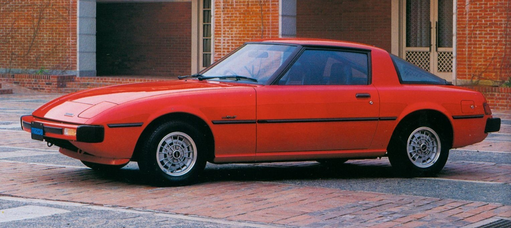
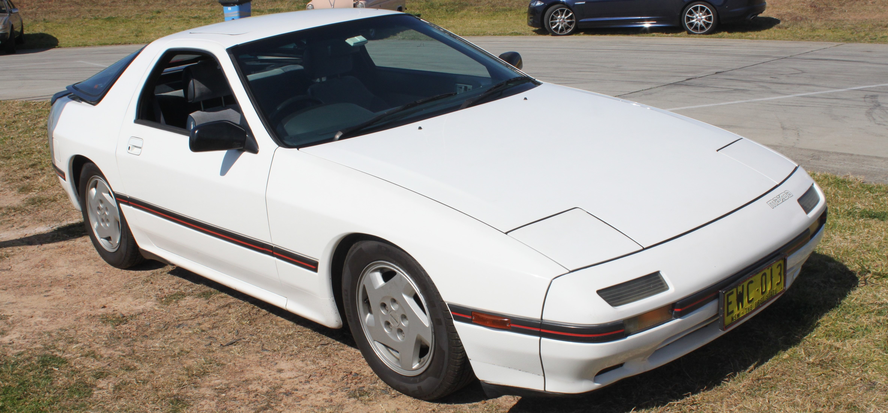
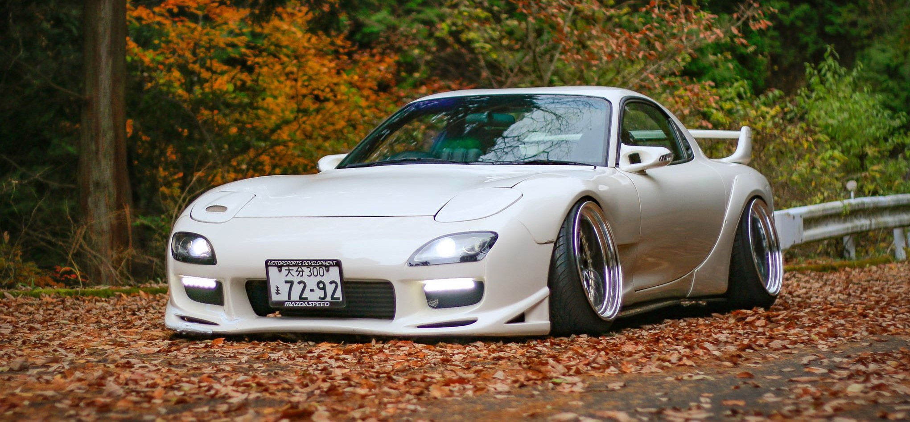

Mazda RX-7
Mazda RX-7 — спортивный автомобиль, выпускавшийся японским автопроизводителем Mazda с 1978 по 2002 год. Оригинальная RX-7 оснащалась двухсекционным роторно-поршневым двигателем и имела переднюю среднемоторную, заднеприводную компоновку. RX-7 пришла на смену RX-3 (обе в Японии продавались под маркой Savanna), вытеснила все остальные роторные автомобили Mazda за исключением Cosmo. За всю историю Mazda RX-7 было три поколения. Первое поколение выпускалось с 1978 по 1985 год. Второе поколение — с 1985 по 1991. Третье поколение — с 1992 по 2002 год.
Первое поколение:
Второе поколение:
Третье поколение:
